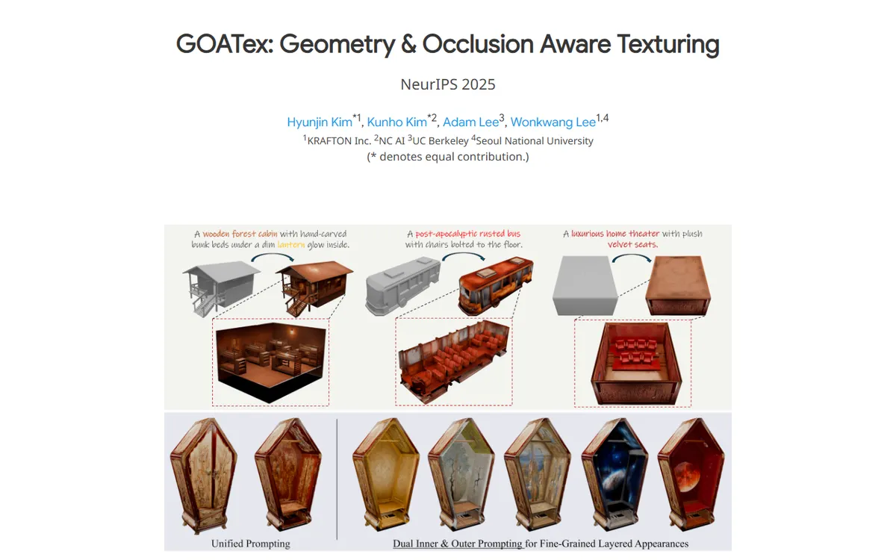

GOATex: Geometry & Occlusion-Aware Texturing
A museum catalogue of carved cabinets: a quiet white title page, then a grey gallery wall lined with lit black display cases.

Checked against the rendered page. No link buttons (paper, code, arXiv) anywhere on the page.
Why it is here
A restrained white hero leads into a striking teaser image, then into a grey gallery band with a 3x3 grid of black-framed video tiles, each with its own caption. This makes it a strong model for showing a results gallery.
Overview
Color Palette
Typography
Google Sans
GOATex: Geometry & Occlusion-Aware Texturing
Abstract · Method · Results · BibTeX — 0123456789
Noto Sans
GOATex: Geometry & Occlusion-Aware Texturing
Abstract · Method · Results · BibTeX — 0123456789
Spacing & Shape
Page Modules
Guidelines
More like this

Scaling Text-Rich Image Understanding via Code-Guided Synthetic Multimodal Data Generation
A university press catalogue: small-caps serif title, a colour wheel of specimens and an earthy bar chart.

DICE-BENCH: Evaluating the Tool-Use Capabilities of Large Language Models in Multi-Round, Multi-Party Dialogues
A Nerfies page with a game-box cover: a charcoal dice banner stamps the identity, then pastel brand-tinted pills and a grey carousel strip carry you into a quiet two-column method read.

TUNA: Comprehensive Fine-grained Temporal Understanding Evaluation on Dense Dynamic Videos
A benchmark that leads with its scoreboard: a fish-logo small-caps wordmark, a gradient venue line, then a full-width grey-headed leaderboard with zebra rows and blue model links.

Archon: A Unified Multimodal Model for Holistic Digital Human Generation
A midnight observatory: an opalescent logotype, teal signal lights and numbered mission cards glowing on deep space.

Pano3DComposer: Feed-Forward Compositional 3D Scene Generation from Single Panoramic Image
A tidy lab notebook with blue margin tabs, opened on a split panorama you can drag apart.

UniPixie: Unified and Probabilistic 3D Physics Learning via Flow Matching
A product launch page for a physics engine: frosted pill nav, heavy sans headlines and a sky-to-red gradient running through every accent.